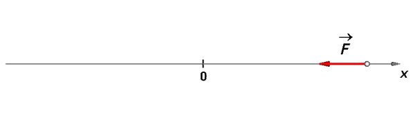
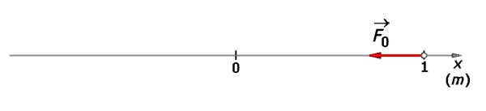
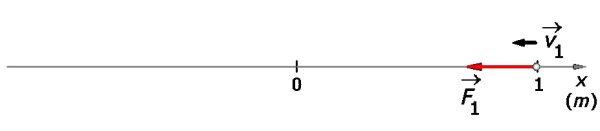
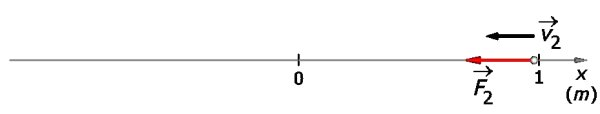
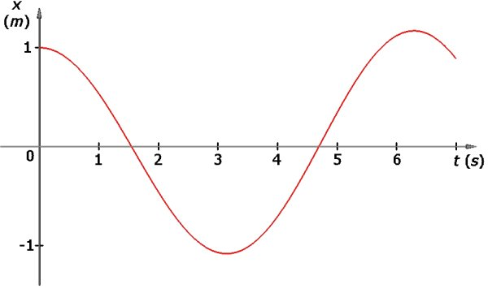
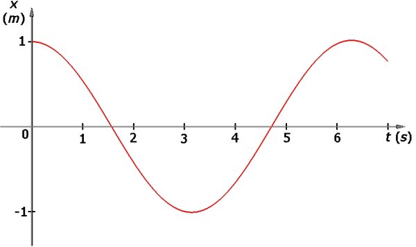
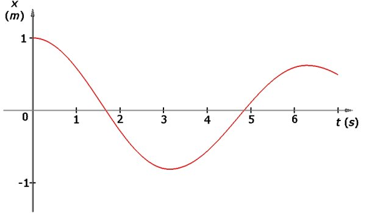

Provocarea 1A4−1
Provocarea 1A4−1
Cum te aştepţi să se mişte un punct material sub acţiunea doar a unei forţe elastice?
A.4. |
Analiza mişcării oscilatorii |
Oscilatorii pe care i−ai realizat transferă treptat energie mediului şi oscilaţiile acestora se amortizează. Inevitabil, mai devreme sau mai târziu, oscilaţiile încetează (când energia iniţială va fi fost transferată integral mediului).
Multe dintre caracteristicile esenţiale ale unei mişcări oscilatorii sunt astfel "mascate" de interacţiunea complexă a oscilatorului cu mediul său. Poţi înţelege esenţa unei mişcări oscilatorii neglijând, pentru început, oricare complicaţie.
Ai putea considera oscilatorul alcătuit dintr−un punct material (neglijându−i astfel forma şi dimensiunile). Totodată, ai putea considera punctul material ataşat unui resort perfect elastic (neglijând astfel complicaţiile firelor şi resorturilor reale). În plus, ai putea considera că oscilatorul nu interacţionează deloc cu mediul său (neglijând astfel amortizarea oscilaţiilor).
Făcând aceste idealizări, punctul material ar fi supus doar unei forţe elastice (proporţională cu elongaţia şi îndreptată mereu către poziţia de echilibru). Ai analiza astfel un oscilator idealizat, neglijând toate complicaţiile (figura 1A4−1).
 Fig. 1A4−1. Oscilator idealizat.
Provocarea 1A4−1
Cum te aştepţi să se mişte un punct material sub acţiunea doar a unei forţe elastice?
Pentru simplitate, ai putea considera că masa punctului material este 1 kg, că forţa elastică la care este supus este mereu de−a lungul axei Ox şi este dată de legea
Fx = -(1 N/m) · x
(constanta elastică este 1 N/m) şi punctul material este eliberat de la coordonata x = 1 m. Aşadar, în poziţia iniţială, punctul material are viteză nulă şi este supus unei forţe având mărimea iniţială 1 N (figura 1A4−2).
 Fig. 1A4−2. Poziţia iniţială a oscilatorului idealizat.
Odată eliberat, punctul material accelerează cu 1 m/s2 către poziţia de echilibru (acceleraţia = forţa/masă). Aceasta înseamnă că viteza punctului material se modifică în ritmul de 1 m/s în fiecare secundă (acceleraţia = modificarea vitezei/durată).
Dar într−o secundă punctul material s−ar apropia semnificativ de poziţia de echilibru, forţa elastică micşorându−se. Aşadar, acceleraţia nu se menţine la valoarea sa iniţială. Mişcarea punctului material este neuniform accelerată (acceleraţia nu este constantă)!
Analiza unei mişcări neuniform accelerată este dificilă, în ciuda tuturor simplificărilor făcute până acum. Calculele sunt comode doar dacă acceleraţia este constantă.
Dacă ai urmări mişcarea în etape mai mici (de câte o zecime de secundă, de exemplu), acceleraţia s−ar modifica mai puţin pe parcursul unei etape. Astfel, ai putea, într−o primă aproximaţie, să consideri acceleraţia constantă pe parcursul unei mici etape! Calculele tale ar fi doar aproximative, acceleraţia modificându−se totuşi pe parcursul unei etape. Poţi însă îmbunătăţi rezultatul, alegând etape şi mai scurte (vei avea însă mai multe etape de analizat!).
Să alegem, pentru început, etape de câte o zecime de secundă. În prima zecime de secundă, considerând acceleraţia practic constantă, viteza punctului material se modifică de la zero (viteza iniţială) la 0,1 m/s (modificarea vitezei = acceleraţia x durata).
Pentru că am considerat că acceleraţia este constantă, viteza medie în această primă zecime de secundă de mişcare este media aritmetică a vitezelor de la capetele intervalului, adică 0,05 m/s.
Cu această viteză medie, în prima zecime de secundă punctul material se apropie de poziţia de echilibru cu 0,005 m (modificarea poziţiei = viteza medie x durata).
Aşadar, după prima zecime de secundă, punctul material
 Fig. 1A4−3. Oscilatorul, după o zecime de secundă de la începerea mişcării.
Poţi relua acum şirul calculelor pentru următoarea zecime de secundă. Pe parcursul acestui interval, modificarea vitezei este 0,995 m/s2 · 0,1 s = 0,0995 m/s (viteza creşte de la 0,1 m/s, cât era la sfârşitul primului interval, la 0,1995 m/s).
Viteza medie pe durata celui de−al doilea interval este, aşadar, 0,114975 m/s. Punctul material se apropie de poziţia de echilibru cu 0,14975 m/s · 0,1 s = 0,014975 m, ajungând astfel la coordonata 0,980 m.
Aşadar, după două zecimi de secundă de la începerea mişcării, punctul material
 Fig. 1A4−4. Oscilatorul, după două zecimi de secundă de la începerea mişcării.
Provocarea 1A4−2
Care te aştepţi să fie parametrii mişcării punctului material după trei zecimi de secundă de la începerea mişcării acestuia?
Dacă ai răbdare, poţi urmări pas cu pas mişcarea punctului material, oricât doreşti. Este însă mult mai confortabil să ceri unui calculator personal să efectueze toate calculele în locul tău! Tabelul 1A4−1 prezintă calculele efectuate de un calculator pentru douăzeci de etape de câte o zecime de secundă, rezultatele fiind rotunjite la primele trei zecimale. Semnele minus indică orientări contrare faţă de axa Ox.
Tabelul 1A4−1. Parametrii mişcării oscilatorului pe parcursul primelor două secunde.
| t (s) |
x (m) |
v (m/s) |
a (m/s2) |
| 0,000 | 1,000 | 0,000 | -1,000 |
| 0,100 | 0,995 | -0,100 | -0,995 |
| 0,200 | 0,980 | -0,200 | -0,980 |
| 0,300 | 0,995 | -0,298 | -0,955 |
| 0,400 | 0,921 | -0,393 | -0,921 |
| 0,500 | 0,877 | -0,485 | -0,877 |
| 0,600 | 0,824 | -0,573 | -0,824 |
| 0,700 | 0,762 | -0,655 | -0,762 |
| 0,800 | 0,693 | -0,731 | -0,693 |
| 0,900 | 0,617 | -0,801 | -0,617 |
| 1,000 | 0,533 | -0,862 | -0,533 |
| 1,100 | 0,444 | -0,916 | -0,444 |
| 1,200 | 0,351 | -0,960 | -0,351 |
| 1,300 | 0,253 | -0,995 | -0,253 |
| 1,400 | 0,152 | -1,020 | -0,152 |
| 1,500 | 0,049 | -1,036 | -0,049 |
| 1,600 | -0,055 | -1,041 | 0,055 |
| 1,700 | -0,158 | -1,035 | 0,158 |
| 1,800 | -0,261 | -1,019 | 0,261 |
| 1,900 | -0,362 | -0,993 | 0,362 |
| 2,000 | -0,459 | -0,957 | 0,459 |
Lansează acest program care îţi permite să analizezi pas cu pas mişcarea unui oscilator idealizat!
Cândva înre 1,5 s şi 1,6 s, punctul material trece prin poziţia de echilibru şi îşi continuă mişcarea în partea cealaltă (semnul elongaţiei se modifică). Calculul pas cu pas arată că, într−adevăr, punctul material oscilează!
Provocarea 1A4−3
Cât te aştepţi să fie perioada acestui oscilator idealizat?
Reprezentarea grafică a mişcării calculate pentru primele şapte secunde este prezentată în figura 1A4−5).
 Fig. 1A4−5. Reprezentarea grafică a mişcării calculate în paşi de câte o zecime de secundă.
Aceasta este o reprezentare grafică asemănătoare cu cele pe care le−ai obţinut în urma măsurătorilor pe care le−ai efectuat pentru oscilatori reali. Totuşi, analiza pas cu pas este doar aproximativă. Poţi însă îmbunătăţi precizia calculelor alegând un interval mai mic (o sutime de secundă, de exemplu). Tabelul 1A4−2 prezintă un fragment din lunga listă de date generată de calculator în acest caz.
Tabelul 1A4−2. Fragment din lista rezultatelor calculelor în cazul unor intervale de câte o sutime de secundă.
| t (s) |
x (m) |
v (m/s) |
a (m/s2) |
| 0,000 | 1,000 | 0,000 | -1,000 |
| ... | ... | ... | ... |
| 1,560 | 0,008 | -1,004 | -0,008 |
| 1,570 | -0,002 | -1,004 | 0,002 |
| ... | ... | ... | ... |
Cândva, între 1,56 s şi 1,57 s (foarte aproape de 1,57 s), punctul material trece prin poziţia de echilibru. Aşadar, perioada de oscilaţie aşteptată pentru acest oscilator este de patru ori 1,57 s, adică 6,28 s (figura 1A4−6).
 Fig. 1A4−6. Reprezentarea grafică a mişcării calculate în paşi de câte o sutime de secundă.
Este formidabil că poţi anticipa cu o asemenea acurateţe detaliile mişcării unui oscilator pe care nici nu l−ai construit!
Când te vei confrunta cu un oscilator real, trebuie doar să adaugi complicaţiile de care eşti nevoit să ţii seama. Tot ce ai de făcut este ca, în secvenţa în care calculezi acceleraţia ca forţă/masă, să pui rezultanta tuturor forţelor care acţionează asupra corpului care oscilează.
În cazul în care corpul care oscilează alunecă pe o suprafaţă orizontală şi nu poţi neglija frecarea de alunecare, este suficient să ţii cont şi de această forţă atunci când calculezi acceleraţia corpului. Oscilaţia va fi, în acest caz, amortizată (figura 1A4−7).
 Fig. 1A4−7. Reprezentarea grafică a mişcării cu frecare de alunecare (coeficientul de frecare este 0,01).
Poţi analiza astfel orice mişcare, cu gradul de precizie pe care−l doreşti!